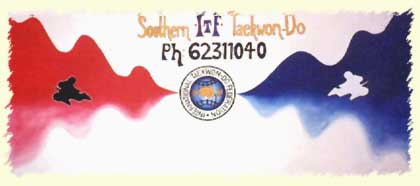

|
|
Southern ITF Taekwon-Do is one of the southernmost ITF Taekwon-Do schools in the world.
The club currently has over 480 members with the senior instructor who is a 6th degree, a 3rd degree and 6, 1st degree black belts. Like any club the number of actively training members is not a reflection of the total membership. At present the club has about 80 training members with 8 black belts. Its membership is made up of adults and children with a number of family groups.
You can learn more about our club by reading the information linked from this page.

|
|